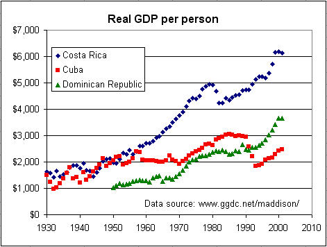
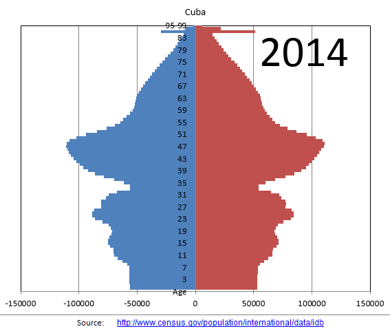

Cuba
I was born in Cuba (I left as a two-year old in 1962) and grew up in Miami. I still have family there so I have a personal interest in the island. I am no fan of its totalitarian state and centrally-planned economy. I know some things about Cuba, but I am no expert. I have no solutions and do not have any idea how things can or will change (not that anyone else does). I wish the best for its long suffering people.
After my parents passed away (my dad especially would have been upset to hear I was going), I traveled to Cuba three times, in 2010 (Havana), 2015 (Santiago and Manzanillo, my mom's hometown), and 2016 (Camaguey, my pop's hometown, with two of my children).
I consider myself an experienced traveller, but I was pretty scared on my first trip. I was alone and using my Cuban passport. I kept a diary and here's a record of the trip: MyCubaDiary.pdf
Below is an eclectic mix of stuff, mostly in Spanish. These are items that interested me over the years and most of it is no longer really relevant, but I'm shating it anyway.
The video and audio links below are actually pretty large files. Depending on how your browser is configured, you may begin to play the file automatically or you might download it.
Monte Rouge: This short film was seen by many Cubans on the island in early 2005. As usual, there is spectacular disagreement about the film and what it means.
Barreto on Maceo: This is a video of a short talk I gave on Antonio Maceo in 2003.
I also have audio, in Spanish, of the Miami DJs who tricked Chavez and Castro. They are hilarious to listen to, especially Castro at the end when he realizes he's been had:
El Romerillo is one of my favorite Alvarez Guedes jokes. It's so funny and depicts so clearly the confidence of every Cuban I know. Google "romerillo" to see that it's quite real. I think Alvarez Guedes is a comic genius.
I posted the graph below on a BBC discussion board a few years ago:

For the data, see this Excel workbook, EconomicGrowthCubaCRDR.xls, making sure to enable macros when you open it.
Demographic trends are going to cause a lot of trouble in the future as the population pyramid makes quite clear:

For the data, see this Excel workbook: CubaPopPyramid.xls. Here's a paper I presented at an ACSE conference, but never published: CubaDemographics.pdf